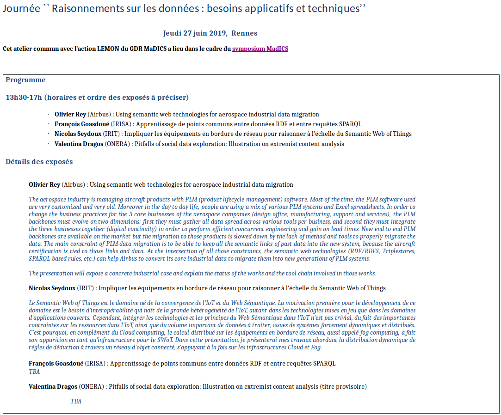
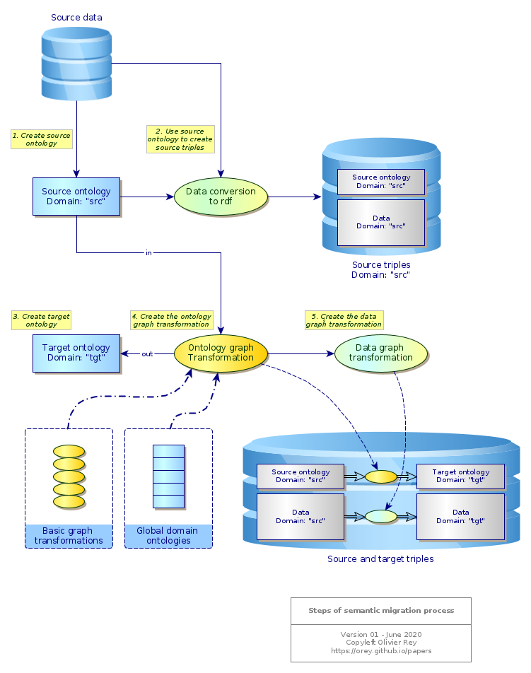

Semantic data migration project#
First research elements (2018-2020)#
Why?#
Arguments for using the semantic graph technology to complex data conversion:
- It is relatively easy to turn whatever table into sets of triples.
- The semantic of each column must be named and reused as a "semantic dictionary" between the multiples sources. This step is much easier to accomplish than in standard data lakes where the complete big definitions must be set in one single movement.
- The design actions, that were at the heart of the problems in GraphApps, are less important and can be limited to a correct understanding of the data.
- The semantic databases (For instance AllegroGraph or Apache Jena) are working in an incremental way: if a triple already exists, the attempt to import it again will do nothing, which "by design" eliminates redundant information.
- Sparql enables easy graph transformations, first of all to visualize data (Gruff on AllegroGraph is a good triplestore visualization tool), and then to transform them.
Timed of life-cycled data#
Data versions (being time-based versions or life-cycle versions) can be managed with a link timestamp or a link version stamp. The timestamp relation will have to be a rdfs:SubClassOf the theoretical link type.
Basic semantic graph transformation (in work)#
In the context of graph transformations, the page Basic semantic graph transformations aims at defining a set of basic graph transformations.
Industry data#
The page Graphs and semantic data in industry talks about the opportunity of using RDF approaches to convert efficiently industrial data.
Presentation to CNRS Madics conference in Rennes in 2019#

The aerospace industry is managing aircraft products with PLM (product lifecycle management) software. Most of the time, the PLM software used are very customized and very old. Moreover in the day to day life, people are using a mix of various PLM systems and Excel spreadsheets. In order to change the business practices for the 3 core businesses of the aerospace companies (design office, manufacturing, support and services), the PLM backbones must evolve on two dimensions: first they must gather all data spread across various tools per business, and second they must integrate the three businesses together (digital continuity) in order to perform efficient concurrent engineering and gain on lead times. New end to end PLM backbones are available on the market but the migration to those products is slowed down by the lack of method and tools to properly migrate the data. The main constraint of PLM data migration is to be able to keep all the semantic links of past data into the new system, because the aircraft certification is tied to those links and data. At the intersection of all those constraints, the semantic web technologies (RDF/RDFS, Triplestores, SPARQL-based rules, etc.) can help Airbus to convert its core industrial data to migrate them into new generations of PLM systems.
The presentation exposes a concrete industrial case and explain the status of the works and the tool chain involved in those works.
A systematic migration process (2020-)#
The 6 steps of transformation#
The process of data migration is linked to the transformation of ontologies.
The migration process that we target is the following:
- Definition of the hidden source ontology: In the data as they are structured today, a source ontology is hidden. The objective of this step is to exhibit the source ontology, and to create a triplestore with the existing data based on the source ontology. The source ontology must have its own namespace.
- Convert the source data in the source ontology referential.
- Definition of the target ontology: We want to convert data in a target format which is based on a target ontology. This ontology must be formalized. It must have its own namespace.
- Definition of the graph transformation required to transform the source ontology in the target ontology: This graph transformation should be defined with Basic semantic graph transformations, and can also use certain abstract domain ontologies.
- Derive from the ontology graph representation, a data graph transformation that enables to transform the data from the source ontology in the target ontology.
- Convert source data into target data.

Data representation is relative#
This process is based on the facts that:
- The same reality can be modeled differently,
- There is a path between the various modeling spaces when it comes to the same concept representations.
See also: The real nature of data.
(Last update: August 2021)